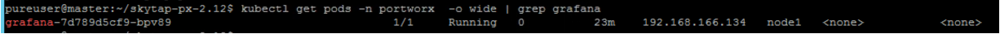

watch kubectl get pods -n portworx -l name=portworx -o wide
echo "Checking Portworx Status"
PX_POD=$(kubectl get pods -l name=portworx -n portworx -o jsonpath='{.items[0].metadata.name}')
kubectl exec -it $PX_POD -n portworx -- /opt/pwx/bin/pxctl status
cd /home/pureuser/skytap-px-2.12
kubectl -n portworx create configmap grafana-dashboard-config --from-file=grafana-dashboard-config.yaml
kubectl -n portworx create configmap grafana-source-config --from-file=grafana-datasource.yaml
kubectl -n portworx create configmap grafana-dashboards --from-file=portworx-cluster-dashboard.json --from-file=portworx-performance-dashboard.json --from-file=portworx-node-dashboard.json --from-file=portworx-volume-dashboard.json --from-file=portworx-etcd-dashboard.json
kubectl apply -f grafana.yaml

kubectl get pods -n portworx -o wide | grep grafana
cd /home/pureuser/px-demos/px-lab-exercise
cat 1-sc.yaml
kubectl apply -f 1-sc.yaml
cd /home/pureuser/px-demos/px-lab-exercise
cat 2-pvc.yaml
kubectl apply -f 2-pvc.yaml
kubectl get pvc
PX_POD=$(kubectl get pods -l name=portworx -n portworx -o jsonpath='{.items[0].metadata.name}')
VOL=`kubectl get pvc | grep postgres-data | awk '{print $3}'`
kubectl exec -it $PX_POD -n portworx -- /opt/pwx/bin/pxctl volume list
kubectl exec -it $PX_POD -n portworx -c portworx -- /opt/pwx/bin/pxctl volume inspect ${VOL}
cd /home/pureuser/px-demos/px-lab-exercise
kubectl apply -f 3-postgres-db.yaml
cd /home/pureuser/px-demos/px-lab-exercise
kubectl apply -f 4-k8s-webapp.yaml
# See where postgres is running
kubectl get po -l app=postgres -o wide
# Get the postgres node name
NODE=`kubectl get pods -l app=postgres -o wide | grep -v NAME | awk '{print $7}'`
# Cordon the node (apps are no longer allowed on this node)
kubectl cordon ${NODE}
# Get the postgres pod node
POD=$(kubectl get pods -l app=postgres -o wide | grep -v NAME | awk '{print $1}')
# Delete the pod
kubectl delete pod ${POD}
# See what node postgres is running on now that its been deleted
kubectl get po -l app=postgres -o wide
kubectl get pvc
POD=$(kubectl get pods -l app=postgres -o wide | grep -v NAME | awk '{print $1}')
kubectl exec $POD -- df -h | grep pxd
kubectl create -f pg-snapshot.yaml
sleep 3
kubectl get volumesnapshot,volumesnapshotdatas
POD=$(kubectl get pods -l app=postgres | grep Running | grep 1/1 | awk '{print $1}')
kubectl exec -it $POD -- bash
psql -U $POSTGRES_USER
\c postgres
drop table mywhales cascade;
kubectl create -f pvc-from-snap.yaml
sleep 2
kubectl get pvc px-postgres-snap-clone
kubectl delete -f postgres-db.yaml
kubectl create -f postgres-db-restore.yaml
kubectl scale deployment.apps/k8s-counter-deployment --replicas=0
kubectl scale deployment.apps/k8s-counter-deployment --replicas=1
kubectl get po